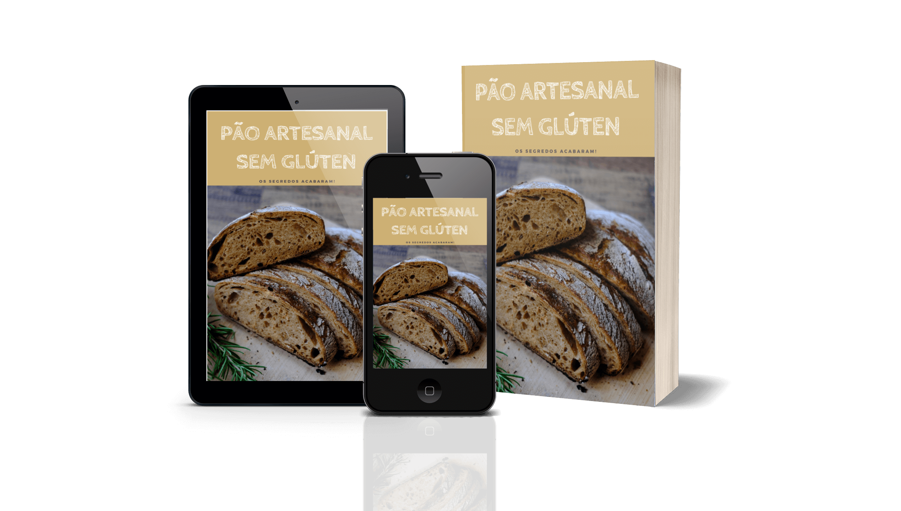
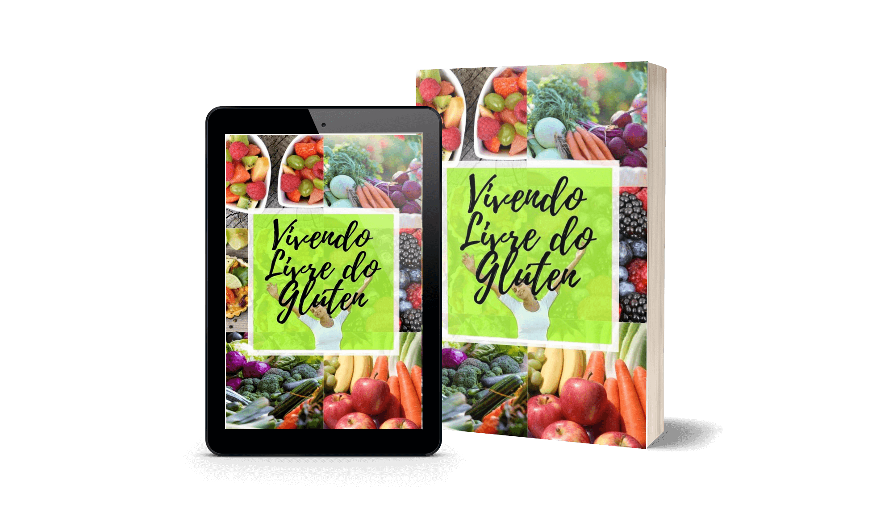

Descubra as técnicas essenciais para fazer pães sem glúten fofinhos e saborosos em sua casa como se estivessem feitos em uma padaria profissional!
Técnicas que você nunca pensou em fazer, que mudam totalmente o resultado.
Benefícios de fazer seus próprios pães em casa:
- Insuspeita de contaminação cruzada
- Isento de conservantes
- Menor custo
Além de:
- Redução da ansiedade
- Redução do estresse
- Aumento do bem-estar
- Combate a depressão
Atenção: Se você é celíaco ou optou em ter uma alimentação mais saudável sem o glúten e tem a dificuldade de encontrar lugares seguros para comer pães sem glúten por não saber como se dá o preparo destes, e quando faz em casa o pão não fica saboroso e logo no dia seguinte já está duro, eu posso, definitivamente, te ajudar a partir de agora.
Para algumas pessoas, o consumo de alimentos sem glúten é uma opção, um meio de atingir uma dieta e uma estilo de vida mais saudável. Para os celíacos, porém, a busca por esses produtos é uma necessidade e um desafio.
Eles retratam que deixam de consumir por medo de contaminação cruzada e dão preferencia a produtores locais e ao preparo em casa.
Notícias Sobre os Benefícios de Preparar Seus Pães em Casa
São atividades manuais que são desafiadoras, mas são possíveis. Dá um pouquinho de esperança para a gente. É como se fosse um pequeno sonho que a gente cultiva...
Basseres ainda diz que atividades manuais feitas com prazer, envoltas de pensamentos positivos (como a esperança de dar certo), ajudam a aliviar tanto o estresse quanto a ansiedade, e a sair um pouco da rotina...
Hobby de fazer pão vira negócio para pequenos empresários
Novos microempreendedores largaram antigas profissões para se dedicar à vida de padeiros
Quem anda satisfeito com seus resultados já pode investir em utensílios profissionais, como o banneton. Trata-se de um cestinho onde a massa é colocada para crescer entre a sova e a modelagem.
Veja a transformação que o fato de produzir alimentos sem glúten em casa trouxe para a vida dessa mulher:
A microempresária Ana Luiza Castro se descobriu celíaca aos 19 anos, e conta que deixou de comer fora pelo risco de contaminação. Na intenção de melhorar a própria alimentação, Ana Luiza Castro passou a cozinhar e aumentou a produção para atender outros celíacos.
Prepare-se para um novo mundo na sua vida sem glúten
Obtenha ainda hoje o livro Pão Artesanal Sem Glúten e aplique as técnicas essenciais para fazer seus pães fofinhos e saborosos nas melhores receitas de pães sem glúten.
O que você vai receber adquirindo o livro digital Pão Artesanal Sem Glúten
- Lógica do mix de farinhas sem glúten
- Utensílios e equipamentos essenciais
- Armazenamento, congelamento e durabilidade
- O que evitar?
- Como evitar a contaminação cruzada?
E mais 10 receitas de pães sem glúten
- Pão francês vegano
- Pão de cebola vegano
- Pão de alho vegano
- Pão focaccia tradicional vegano
- Pão tipo focaccia sem lactose
- Pão brioche sem lactose
- Pão de damasco sem lactose
- Pão francês integral sem lactose
- 2 receitas de Pão doce sem lactose diferentes
Aproveite o valor promocional por tempo limitado de
R$ 70,00 por apenas
R$ 15,00
Se comprar agora você ainda recebe o livro Vivendo Livre do Glúten como Bônus
Clique aqui agora para aproveitar essa oportunidade
Se no período de 7 dias, por qualquer motivo, você não estiver satisfeito com o Livro Pão Artesanal Sem Glúten, basta enviar 1 único e-mail através do nosso suporte e devolvemos todo o seu dinheiro imediatamente!
Clique no botão aqui embaixo para aproveitar essa oportunidade
Ainda vai continuar se lamentando pela dificuldade de encontrar um lugar seguro e confiável e por não conseguir fazer pães de qualidade?
Você não tem mais tempo para perder!
Agora você tem 3 opções:
- Não fazer nada e continuar dependendo da dificuldade em encontrar pães sem glúten de qualidade.
- Continuar pesquisando outras receitas com técnicas que não dão certo.
- Pode comprar agora o livro Pão Artesanal Sem Glúten e eliminar definitivamente as dificuldades de comer pão sem glúten.